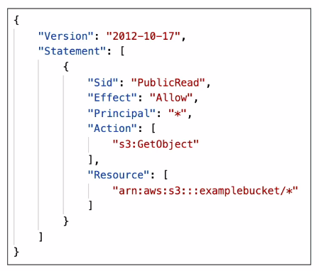
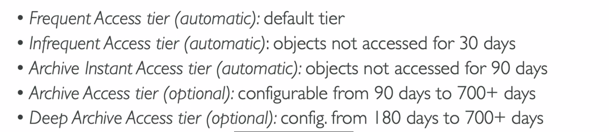
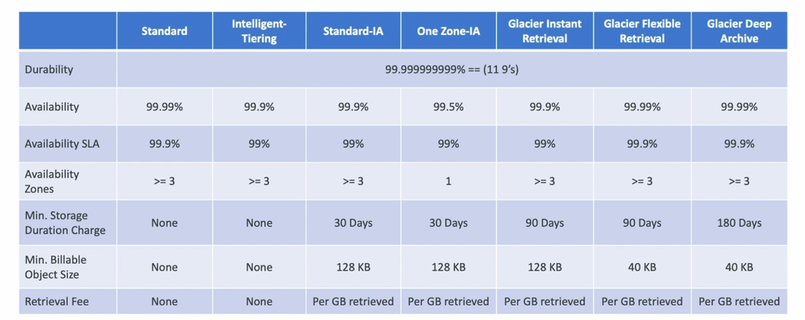

🌿 Introduction
- S3 là một trong những khối xây dựng chính của AWS
- Nó được quảng cáo là có khả năng lưu trữ vô hạn
- Nhiều Web sử dụng S3 như Backbone
- Nhiều services của AWS sử dụng S3 để integrate tốt hơn.
🌿 Buckets
- Cho phép người dùng lưu trữ objects(files) trong “buckets”(directories)
- Một Bucket sẽ có một tên unique( trên tất cả regions của tất cả accounts)
- Region level - S3 nhìn giống như một global service nhưng các buckets được tạo trên một region.
- Naming convention:
- Không viết hoa, không gạch dưới
- 3 - 63 ký tự
- Không phải là một IP
- Phải bắt đầu bằng một chữ cái thường hoặc một ký tự số.
- Không được đặt prefix là xn…
- Không được đặt suffix là …s3alias
🌿 Objects
- Objects(file) có một một Key
- Key == full path:
- s3://my-bucket/my_file.txt
- s3://my-bucket/another_folder/my_file.txt
- Không có khái niệm directories trong s3, tất cả là key hết.
- Object value:
- Max size là 5 TB(5000 Gb)
- Nếu upload file nhiều hơn 5T, phải sử dụng multi-part upload
- Có metadata
- Tags - hữu dụng cho bảo mật vào vòng đời.
- Version ID(chỉ có khi bật versioning)
🌿 Security
- User-Based
- IAM Policies
- Resource-Based
- Bucket Policies - áp dụng cho nhiều accounts
- Object Access Control List - ACL
- Bucket Access Control List - ACL
- Note: Một IAM principle có thể truy cập được vào một S3 object phải thỏa mãn:
- IAM permission cho phép OR resource policy cho phép
- AND không có DENY
- Encryption: mã hóa objects trong S3 sử dụng encryption keys.
🌿 S3 Bucket Policies

- JSON policy chứa:
- Resource: resource chỉ định để phân quyền(bucket or objects)
- Action: là APIs thao tác với resource
- Effect: Allow/Deny
- Principal: chỉ định account/user cho policy
- Ví dụ như policy trên là: cho phép toàn bộ người dùng quyền get toàn bộ Objects trong bucket.
🌿 Bucket settings for Block Public Access
- Những settings này để tránh company leak dữ liệu.
- Có thể set ở account level
- Nếu chắc chắn các respurces sẽ không được public, chúng ta có thể giữ nguyên các thông số này.
🌿 Static Website Hosting
- S3 có thể host một static website và giúp chúng có thể truy cập được trên Internetmà không cần sử dụng máy chủ web riêng.
- URL có dạng:
- Nếu mã trả về 403, hãy chắc rằng bạn đã setup policy để cho phép việc truy cập public.
- Ưu điểm:
- Chi phí thấp
- Tính sẵn sàng cao
- Khả năng mở rộng vô hạn
- Nhược điểm:
- Giới hạn khả năng phát triển tính năng, ví dụ như chạy script, không dùng cho web động,…
🌿 Versioning
- Bạn có thể đánh phiên bản cho các files trên Amazon S3
- Nó được bật ở bucket level
- Cùng một key, nếu overwrite thì phiên bản sẽ được update.
- Best practice để quản lý version cho bucket:
- Bảo vệ từng phiên bản một -> dễ đang restore về một version trước đó
- Notes:
- Các files đã tồn tại trước khi bật tính năng versioning sẽ được đánh version = null.
- Tạm dừng tính năng versioning sẽ không bị xóa các phiên bản trước đó.
🌿 Replication
- Phải bật Versioning cho cả 2 Buckets ở 2 regions.
- Cross-Region Replication (CRR)
- Same-Region Replication (SRR)
- Các buckets có thể thuộc về những accounts khác nhau, không nhất thiết là phải chung account thì mới thực hiện replication được.
- Quá trình copying giữa 2 buckets là bất đồng bộ
- Phải cung cấp IAM permissions phù hợp cho S3.
- Use Cases:
- CRR - dùng khi cần truy cập từ nhiều region với độ trễ thấp.
- SSR - tổng hợp được log, live replication giữa các accounts production và test.
- Notes:
- Sau khi bật tính năng replication, chỉ những objects mới về sau mới có bản sao.
- Nếu muốn tạo bản sao cho những objects đã tồn tại, sử dụng tính năng S3 Batch Replication
- Tính năng này sẽ tạo bản sao cho những objects đã tồn tại ngoài ra còn tạo cho những objects đã thất bại khi tạo bản sao ở những lần trước đó.
- Về cơ chế DELETE:
- Có thể tạo bản sao cho object xóa markers(xóa theo version) từ bucket source sang bucket target(optional setting)
- Xóa với một version ID(xóa vĩnh viễn) sẽ không được tạo bản sao.
- Không hỗ trợ sao chép chuỗi
- Tức là có 3 bucket1,2,3. Nếu muốn sao chép bucket1 đến 2 và 3 thì sao chép trực tiếp 1 -> 2 và 1 -> 3. Chứ không được 1 -> 2 -> 3.
🌿 Tính bền bỉ(durability) và tính khả dụng(availability)
- Durability:
- Rất bền bỉ, ứng với tất cả các objects trên tất cả các regions.
- Nếu bạn lưu trữ 10,000 objects trên Amazon S3, trung bình 10,000 năm chúng ta sẽ bị mất một object.
- Điều này đúng với tất cả các storage class.
- Availability:
- Luôn khả dụng khi cần truy cập.
- Có sự khác nhau giữa các class.
- Ví dụ S3 tiêu chuẩn có 99,99% khả dụng. Tức là một năm thì nó chỉ có khoảng 53 phút không khả dụng thôi.
🌿 Storage Class
🍃 S3 Standard - General Purpose
- 99,99% khả dụng
- Sử dụng cho những dữ liệu thường xuyên được truy cập
- Độ trễ thấp, thông lượng cao.
- Có thể đồng thời duy trì 2 facility failures.
- Use cases: Phân tích BigData, mobile&gaming applications, content distribution, …
🍃 S3 Storage Classes - Infrequent Access
- Cho dữ liệu không thường xuyên được truy cập nhưng có thể yêu cầu truy cập nhanh khi cần.
- Giá thấp hơn S3 Standard
- Amazon S3 Standard-Infrequent Access (S3 Standard-IA)
- 99,9% khả dụng.
- Use case: Disaster Recovery, backups
- Amazon S3 One Zone-Infrequent Access (S3 One Zone-IA
- Độ bền(99,999999999%) trong một AZ, dữ liệu sẽ bị mất khi AZ bị phá hủy.
- 99,5% khả dụng
- Use case: Lưu backups cho dữ liệu đang sử dụng hoặc dữ liệu muốn recreate.
🍃 S3 Glacier Storage Classes
-
Chi phí thấp, là lựa chọn khi chúng ta muốn lưu trữ dữ liệu lâu dài nhưng ít được truy cập.
-
Giá = Giá dung lượng + giá truy xuất object
-
S3 Glacier Instant Retrieval
- Phù hợp với nhu cầu truy cập dữ liệu một quý một lần.
- Tối thiểu lưu trữ 90 ngày
-
S3 Glacier Flexible Retrieval
- Expected(1-5 phút), Standard(3-5 giờ), Bulk(5-12 giờ) - miễn phí
- Tối thiểu lưu trữ 90 ngày
-
S3 Glacier Deep Archive - lưu trữ dài hạn
- Standard(12 giờ), Bulk(48 giờ)
- Tối thiểu lưu trữ trong 180 ngày
🍃 S3 Intelligent-Tiering
- Giúp chuyển đổi tự động các class dựa theo việc truy xuất dữ liệu của người dùng, từ đó tối ưu được chi phí cũng như khả năng lưu trữ và truy xuất dữ liệu phù hợp với nhu cầu sử dụng của người dùng.
- Không phải trả phí truy xuất dữ liệu khi lựa chọn option này. 
🍃 Comparision
